November 9, 2025 · Deep Learning · by Daniel Jordan Viray
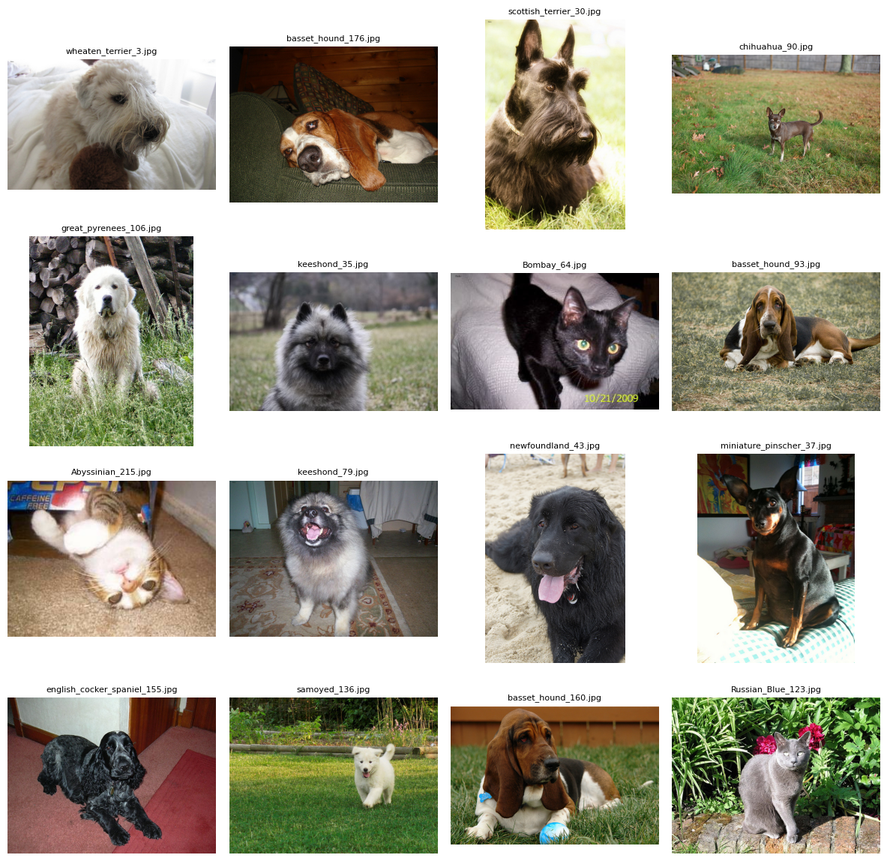
Just completed my next project in learning how to build and engineer AI systems! In this notebook, I built an AI model that classifies dog breeds from images with up to 95% accuracy. Technically, this project explores core AI-engineering optimization techniques: image augmentation, loss-function mathematics, and fine-tuning training parameters.
# ! pip install -Uqq fastbook
# import fastbook
# fastbook.setup_book()
# from fastbook import *
# from fastai.vision.all import *
Download and load data. Dataset info: https://www.robots.ox.ac.uk/~vgg/data/pets/
# download pet breeds data set
path = untar_data(URLs.PETS) # FastAI helper function
Path.BASE_PATH = path # points path operations to PETS dataset folder
# view data folder structure
path.ls()
(#2) [Path('images'),Path('annotations')]
# check file names in file path
(path/"images").ls()
(#7393) [Path('images/wheaten_terrier_3.jpg'),Path('images/basset_hound_176.jpg'),Path('images/scottish_terrier_30.jpg'),Path('images/chihuahua_90.jpg'),Path('images/great_pyrenees_106.jpg'),Path('images/keeshond_35.jpg'),Path('images/Bombay_64.jpg'),Path('images/basset_hound_93.jpg'),Path('images/Abyssinian_215.jpg'),Path('images/keeshond_79.jpg'),Path('images/newfoundland_43.jpg'),Path('images/miniature_pinscher_37.jpg'),Path('images/english_cocker_spaniel_155.jpg'),Path('images/samoyed_136.jpg'),Path('images/basset_hound_160.jpg'),Path('images/Russian_Blue_123.jpg'),Path('images/Russian_Blue_76.jpg'),Path('images/leonberger_102.jpg'),Path('images/scottish_terrier_53.jpg'),Path('images/english_setter_95.jpg')...]
View a subset of the images for a sanity check:
from fastai.vision.utils import *
import matplotlib.pyplot as plt
files = (path/"images").ls()[:16] # first 16 image paths
images = [PILImage.create(f) for f in files]
fig, axes = plt.subplots(4, 4, figsize=(12,12))
for ax, img, f in zip(axes.flatten(), images, files):
ax.imshow(img)
ax.set_title(f.name, fontsize=8) # show just the filename
ax.axis('off')
plt.tight_layout()
plt.show()
Test RegEx to extract labels from file names:
fname = (path/"images").ls()[0]
fname
Path('images/wheaten_terrier_3.jpg')
re.findall(r'(.+)_\d+.jpg$', fname.name)
['wheaten_terrier']
Create DataBlock:
DataBlock = high-level FastAI object that gives instruction for how to create the data set.
pets = DataBlock(blocks = (ImageBlock, CategoryBlock),
get_items=get_image_files,
splitter=RandomSplitter(seed=42),
get_y=using_attr(RegexLabeller(r'(.+)_\d+.jpg$'), 'name'),
item_tfms=Resize(460), # default crop is "center crop"; shorter side is 460px, longer side is cropped to make is square (460px)
batch_tfms=aug_transforms(size=224, min_scale=0.75)) # min_scale = how much image can be cropped during random augmentation (b/w 75% to 100% of original size)
Actually create the data set:
dls = pets.dataloaders(path/"images")
Theory:
Each image in the training data set has different pixel dimensions. We want to perform two actions on each image: (1) resize them such that each image is the same dimension, and (2) resize the image to very large dimensions (much larger than the dimensions we pass into the model).
The reason for step (2) is so that when we rotate, flip, and perform other augmentations on the training images, we can ensure the images are large enough to not lose image quality. For example, if we rotate the image 45 deg, we don't want black pixels in the corner if the image is too small.
We then batch these large images into a tensor. Then we perform data augmentation (e.g., rotation, flipping, etc.) on the entire batch. Performing these transformations as a batch in a tensor on the GPU ensures speed. Note that each image in the batch may receive different data augmentation functions; not all images in the batch will be transformed the same way.
For each training epoch in the model, the model will train on slighlty different "versions" of the training image. For example, say there is a specific image on a Beagle. In epoch 1, the model might train on a flipped version of the Beagle. In epoch 2, the model might train on a rotated version of the Beagle. This ensures the model generalizes the image rather than memorizing a specific pattern of pixels for the image. (Just like how we humans can detect the dog breed wheter it is laying upside down or is right side up).
Check dimensions of original images:
from PIL import Image
# List image files
image_files = (path/"images").ls()
# Loop through the first 5 images
for img_path in image_files[:5]:
with Image.open(img_path) as img:
print(f"{img_path.name}: {img.size}")
wheaten_terrier_3.jpg: (500, 313)
basset_hound_176.jpg: (500, 375)
scottish_terrier_30.jpg: (333, 500)
chihuahua_90.jpg: (500, 333)
great_pyrenees_106.jpg: (391, 500)
# check training data set
dls.train_ds
(#5912) [(PILImage mode=RGB size=375x500, TensorCategory(1)),(PILImage mode=RGB size=300x218, TensorCategory(3)),(PILImage mode=RGB size=500x375, TensorCategory(21)),(PILImage mode=RGB size=500x333, TensorCategory(16)),(PILImage mode=RGB size=500x326, TensorCategory(9)),(PILImage mode=RGB size=512x560, TensorCategory(3)),(PILImage mode=RGB size=500x376, TensorCategory(12)),(PILImage mode=RGB size=334x500, TensorCategory(21)),(PILImage mode=RGB size=333x500, TensorCategory(27)),(PILImage mode=RGB size=500x375, TensorCategory(34)),(PILImage mode=RGB size=500x375, TensorCategory(3)),(PILImage mode=RGB size=500x333, TensorCategory(13)),(PILImage mode=RGB size=500x351, TensorCategory(31)),(PILImage mode=RGB size=375x500, TensorCategory(16)),(PILImage mode=RGB size=245x300, TensorCategory(6)),(PILImage mode=RGB size=500x333, TensorCategory(13)),(PILImage mode=RGB size=500x375, TensorCategory(26)),(PILImage mode=RGB size=500x375, TensorCategory(30)),(PILImage mode=RGB size=377x500, TensorCategory(7)),(PILImage mode=RGB size=333x500, TensorCategory(11))...]
# stored as tuples (image, category)
dls.train_ds[0][0] # index first tuple, first element in tuple (image)
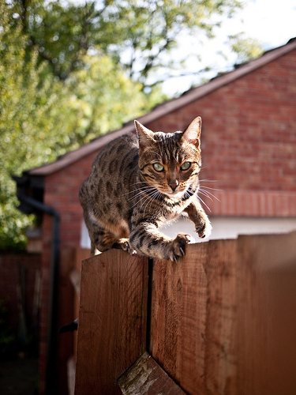
# check shape of image in dls before any transformation
dls.train_ds[0][0].shape
(500, 375)
# check dimensions of resized individual image (before batch transformation)
from fastai.vision.all import *
resize = Resize(460)
pil = PILImage.create((path/'images').ls()[0])
t = resize(pil) # applies the item transform
print(t.shape) # -> [3, 460, 460]
(460, 460)
# get one batch from the training set
# 64 images, 3 channels, 224 x 224 px
xb_train, yb_train = dls.train.one_batch()
print(xb_train.shape)
torch.Size([64, 3, 224, 224])
# view data augmentation in training set
dls.show_batch((xb, yb))
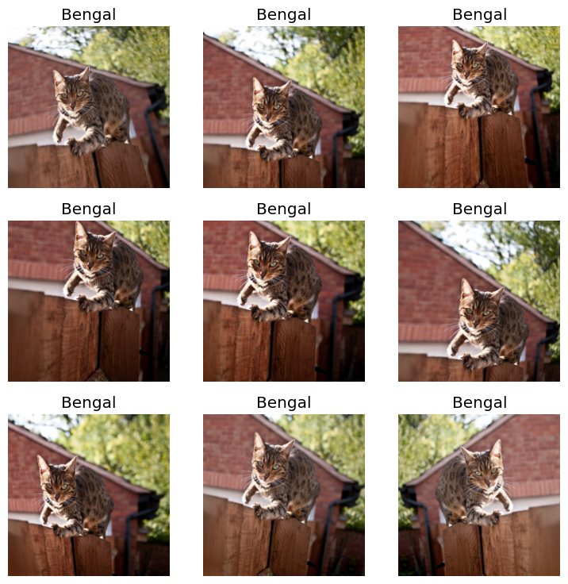
# check dimensions of resized batched images in validation set
# 64 images, 3 channels (RBG), 224px x 224 px
xb_valid, yb_valid = dls.valid.one_batch()
print(xb_valid.shape)
torch.Size([64, 3, 224, 224])
# view sample of validation set
# notice how there are is not data augmentation here. Just re-sizing
import matplotlib.pyplot as plt
plt.rcParams['axes.titlesize'] = 6
dls.show_batch((xb_valid, yb_valid), max_n=24, figsize=(8,8))
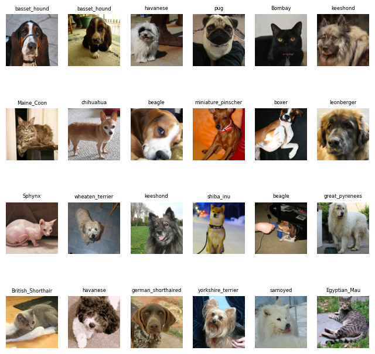
Check train/valid split:
# check training / validation split (counts)
dls.train.n, dls.valid.n # counts per split
(5912, 1478)
# check training / validation split (percentage)
dls.train.n/7393, dls.valid.n/7393
(0.7996753685919112, 0.1999188421479778)
Summary function to check everything loaded correctly in data loaders:
# data loaders summary function
pets.summary(path/"images")
Setting-up type transforms pipelines
Collecting items from /root/.fastai/data/oxford-iiit-pet/images
Found 7390 items
2 datasets of sizes 5912,1478
Setting up Pipeline: PILBase.create
Setting up Pipeline: partial -> Categorize -- {'vocab': None, 'sort': True, 'add_na': False}
Building one sample
Pipeline: PILBase.create
starting from
/root/.fastai/data/oxford-iiit-pet/images/Bengal_92.jpg
applying PILBase.create gives
PILImage mode=RGB size=375x500
Pipeline: partial -> Categorize -- {'vocab': None, 'sort': True, 'add_na': False}
starting from
/root/.fastai/data/oxford-iiit-pet/images/Bengal_92.jpg
applying partial gives
Bengal
applying Categorize -- {'vocab': None, 'sort': True, 'add_na': False}
gives
TensorCategory(1)
Final sample: (PILImage mode=RGB size=375x500, TensorCategory(1))
Collecting items from /root/.fastai/data/oxford-iiit-pet/images
Found 7390 items
2 datasets of sizes 5912,1478
Setting up Pipeline: PILBase.create
Setting up Pipeline: partial -> Categorize -- {'vocab': None, 'sort': True, 'add_na': False}
Setting up after_item: Pipeline: Resize -- {'size': (460, 460), 'method': 'crop', 'pad_mode': 'reflection', 'resamples': (<Resampling.BILINEAR: 2>, <Resampling.NEAREST: 0>), 'p': 1.0}
-> ToTensor
Setting up before_batch: Pipeline:
Setting up after_batch: Pipeline: IntToFloatTensor -- {'div': 255.0, 'div_mask': 1}
-> Flip -- {'size': None, 'mode': 'bilinear', 'pad_mode': 'reflection', 'mode_mask': 'nearest', 'align_corners': True, 'p': 0.5}
-> RandomResizedCropGPU -- {'size': (224, 224), 'min_scale': 0.75, 'ratio': (1, 1), 'mode': 'bilinear', 'valid_scale': 1.0, 'max_scale': 1.0, 'mode_mask': 'nearest', 'p': 1.0}
-> Brightness -- {'max_lighting': 0.2, 'p': 1.0, 'draw': None, 'batch': False}
Building one batch
Applying item_tfms to the first sample:
Pipeline: Resize -- {'size': (460, 460), 'method': 'crop', 'pad_mode': 'reflection', 'resamples': (<Resampling.BILINEAR: 2>, <Resampling.NEAREST: 0>), 'p': 1.0}
-> ToTensor
starting from
(PILImage mode=RGB size=375x500, TensorCategory(1))
applying Resize -- {'size': (460, 460), 'method': 'crop', 'pad_mode': 'reflection', 'resamples': (<Resampling.BILINEAR: 2>, <Resampling.NEAREST: 0>), 'p': 1.0}
gives
(PILImage mode=RGB size=460x460, TensorCategory(1))
applying ToTensor gives
(TensorImage of size 3x460x460, TensorCategory(1))
Adding the next 3 samples
No before_batch transform to apply
Collating items in a batch
Applying batch_tfms to the batch built
Pipeline: IntToFloatTensor -- {'div': 255.0, 'div_mask': 1}
-> Flip -- {'size': None, 'mode': 'bilinear', 'pad_mode': 'reflection', 'mode_mask': 'nearest', 'align_corners': True, 'p': 0.5}
-> RandomResizedCropGPU -- {'size': (224, 224), 'min_scale': 0.75, 'ratio': (1, 1), 'mode': 'bilinear', 'valid_scale': 1.0, 'max_scale': 1.0, 'mode_mask': 'nearest', 'p': 1.0}
-> Brightness -- {'max_lighting': 0.2, 'p': 1.0, 'draw': None, 'batch': False}
starting from
(TensorImage of size 4x3x460x460, TensorCategory([ 1, 3, 21, 16], device='cuda:0'))
applying IntToFloatTensor -- {'div': 255.0, 'div_mask': 1}
gives
(TensorImage of size 4x3x460x460, TensorCategory([ 1, 3, 21, 16], device='cuda:0'))
applying Flip -- {'size': None, 'mode': 'bilinear', 'pad_mode': 'reflection', 'mode_mask': 'nearest', 'align_corners': True, 'p': 0.5}
gives
(TensorImage of size 4x3x460x460, TensorCategory([ 1, 3, 21, 16], device='cuda:0'))
applying RandomResizedCropGPU -- {'size': (224, 224), 'min_scale': 0.75, 'ratio': (1, 1), 'mode': 'bilinear', 'valid_scale': 1.0, 'max_scale': 1.0, 'mode_mask': 'nearest', 'p': 1.0}
gives
(TensorImage of size 4x3x224x224, TensorCategory([ 1, 3, 21, 16], device='cuda:0'))
applying Brightness -- {'max_lighting': 0.2, 'p': 1.0, 'draw': None, 'batch': False}
gives
(TensorImage of size 4x3x224x224, TensorCategory([ 1, 3, 21, 16], device='cuda:0'))
Check for existence and use of GPU (cuda):
learn.dls.device # device used for the DataLoaders
device(type='cuda', index=0)
next(learn.model.parameters()).device # device the model is on
device(type='cuda', index=0)
Purposes: (1) Get a quick baseline accuracy, (2) does the model train at all?
learn = vision_learner(dls, resnet34, metrics=[accuracy, error_rate])
learn.fine_tune(2)
# fasiAI defaults to cross-entropy loss function; inferred from image data and categorical outcome
Downloading: "https://download.pytorch.org/models/resnet34-b627a593.pth" to /root/.cache/torch/hub/checkpoints/resnet34-b627a593.pth
100%|██████████| 83.3M/83.3M [00:00<00:00, 132MB/s]
| epoch | train_loss | valid_loss | accuracy | error_rate | time |
|---|---|---|---|---|---|
| 0 | 1.555198 | 0.338130 | 0.894452 | 0.105548 | 00:30 |
| epoch | train_loss | valid_loss | accuracy | error_rate | time |
|---|---|---|---|---|---|
| 0 | 0.494421 | 0.327485 | 0.903248 | 0.096752 | 00:36 |
| 1 | 0.308087 | 0.241630 | 0.924222 | 0.075778 | 00:36 |
The purpose of this section is to better understand the output behind cross-entropy loss. Cross-entropy loss is used for multi-category classification problems.
There are two parts to Cross Entropy Loss: (1) Softmax and (2) Log Likelihood.
# select one batch (default to validation set)
# 64 images/labels in a batch
x,y = dls.valid.one_batch()
# view what y (dependent variable) looks like
# they are categories / pet breeds
y
TensorCategory([14, 14, 22, 29, 3, 24, 6, 17, 15, 26, 16, 25, 11, 35, 24, 33, 15, 21, 4, 22, 20, 36, 31, 5, 5, 20, 30, 11, 31, 24, 11, 28, 11, 33, 6, 9, 11, 18, 7, 3, 15, 17, 18, 17, 16, 12,
5, 23, 14, 4, 22, 17, 1, 4, 19, 5, 11, 27, 22, 36, 36, 33, 20, 2], device='cuda:0')
Obtain predictions (activations of final layer of neural net) for just one batch:
preds,labels = learn.get_preds(dl=[(x,y)])
There are 64 predictions and 64 (actual) labels since our batch has 64 images/labels in the set.
len(preds)
64
len(labels)
64
# same output as "y" above
labels
tensor([14, 14, 22, 29, 3, 24, 6, 17, 15, 26, 16, 25, 11, 35, 24, 33, 15, 21, 4, 22, 20, 36, 31, 5, 5, 20, 30, 11, 31, 24, 11, 28, 11, 33, 6, 9, 11, 18, 7, 3, 15, 17, 18, 17, 16, 12, 5, 23,
14, 4, 22, 17, 1, 4, 19, 5, 11, 27, 22, 36, 36, 33, 20, 2])
# for each prediction element, there are 37 probabilities; one for each breed.
len(preds[0])
37
# here are the 37 probabilities for the first image:
preds[0]
tensor([1.2690e-07, 3.5162e-06, 5.3713e-07, 1.0684e-07, 1.9571e-08, 3.5571e-07, 1.5125e-08, 4.4227e-08, 2.2894e-07, 3.2881e-08, 4.9321e-08, 9.2373e-08, 6.7784e-06, 3.0692e-07, 9.9918e-01, 3.4053e-04,
3.8140e-06, 8.6007e-09, 1.9983e-06, 1.1052e-05, 2.4418e-05, 3.8791e-08, 2.5733e-07, 7.8192e-08, 1.3803e-07, 2.1454e-06, 3.5073e-07, 1.1836e-07, 6.9297e-08, 1.2144e-07, 4.1609e-04, 2.6710e-07,
1.1337e-07, 4.2507e-07, 5.2886e-07, 1.2182e-07, 2.6713e-07])
# the sum of the 37 probabilities sums to 1 (100% probability)
preds[0].sum()
tensor(1.)
# example sigmoid function
# softmax is similar to sigmoid, but for multi-class classification
plot_function(torch.sigmoid, min=-4,max=4)
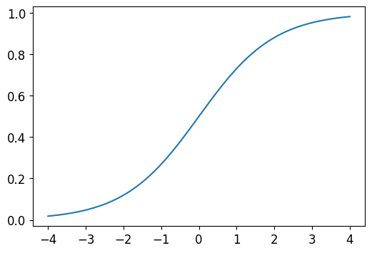
Here is a toy example -- there are six images in a binary classification problem:
# example: 6 images, 2 possible categories, std dev of 2 (so multiply rand by 2)
torch.random.manual_seed(42);
acts = torch.randn((6,2))*2
acts
tensor([[ 0.6734, 0.2576],
[ 0.4689, 0.4607],
[-2.2457, -0.3727],
[ 4.4164, -1.2760],
[ 0.9233, 0.5347],
[ 1.0698, 1.6187]])
# we can't just take sigmoid of acts since predictions will not sum to 1 (at row-level)
acts.sigmoid()
tensor([[0.6623, 0.5641],
[0.6151, 0.6132],
[0.0957, 0.4079],
[0.9881, 0.2182],
[0.7157, 0.6306],
[0.7446, 0.8346]])
# the activations indicate the relative confidence in the classification prediction
# i.e., how much higher/lower the activation score is in one class vs. the other
# since there are only two classes in the example, we can take the difference between the classes
(acts[:,0]-acts[:,1])
tensor([ 0.4158, 0.0083, -1.8731, 5.6924, 0.3886, -0.5489])
# now we can take the sigmoid of the differences in predictions
# we obtain probability that the class is Category 0, so 1-P(Cateogry 0) = P(Category 1)
(acts[:,0]-acts[:,1]).sigmoid()
tensor([0.6025, 0.5021, 0.1332, 0.9966, 0.5959, 0.3661])
# softmax is the generalized form of this for multi-class classification
# softmax function is:
# def softmax(x): return exp(x) / exp(x).sum(dim=1, keepdim=True)
# softmax returns same value as sigmoid for column 0
sm_acts = torch.softmax(acts, dim=1)
sm_acts
tensor([[0.6025, 0.3975],
[0.5021, 0.4979],
[0.1332, 0.8668],
[0.9966, 0.0034],
[0.5959, 0.4041],
[0.3661, 0.6339]])
Notes on the math/intuition behind softmax: - e^(x) ensures that all numbers are positive - e^(x) / e^(x).sum turns the logits into probabilities that sum to 1 - the exponential magnifies the relative distance between the logits; the distance is magnified exponentially - in practice, this means that softmax is great at picking a single class from the option of classes; however, there may be cases where we want the model to say "does not recognize any of the classes. (In this case, use multiple binary output columns, each using a sigmoid activation.)
Note on multiple binary output columns (good for multiple category classes or classes not recognized):
Assume a binary classification problem where the labels of six images are as follows:
# toy/sample targets/labels (6 images)
labels = tensor([0,1,0,1,1,0])
Assume these are our softmax activations for the images:
# softmax activations
sm_acts
tensor([[0.6025, 0.3975],
[0.5021, 0.4979],
[0.1332, 0.8668],
[0.9966, 0.0034],
[0.5959, 0.4041],
[0.3661, 0.6339]])
Select corresponding softmax activation (probability) for each image label:
# for all 6 rows in sm_acts, take targ index
idx = range(6)
sm_acts[idx, labels]
tensor([0.6025, 0.4979, 0.1332, 0.0034, 0.4041, 0.3661])
Output in table format:
from IPython.display import HTML
from IPython.display import display
df = pd.DataFrame(sm_acts, columns=["P(0)","P(1)"])
# df['idx'] = idx
df['Label'] = labels
df['P(Label)'] = sm_acts[range(6), labels]
#HTML(df.to_html())
display(df)
| P(0) | P(1) | Label | P(Label) | |
|---|---|---|---|---|
| 0 | 0.602469 | 0.397531 | 0 | 0.602469 |
| 1 | 0.502065 | 0.497935 | 1 | 0.497935 |
| 2 | 0.133188 | 0.866811 | 0 | 0.133188 |
| 3 | 0.996640 | 0.003360 | 1 | 0.003360 |
| 4 | 0.595949 | 0.404051 | 1 | 0.404051 |
| 5 | 0.366118 | 0.633882 | 0 | 0.366118 |
The PyTorch function F.nll_loss that does the same thing above (and takes the negative):
# PyTorch function : negative log likelihood (note: does not take the log). Assumes you've already taken the log
# log_softmax function takes log and softmax. nll_loss meant to be used AFTER log_softmax
F.nll_loss(sm_acts, labels, reduction='none')
tensor([-0.6025, -0.4979, -0.1332, -0.0034, -0.4041, -0.3661])
We want to take the log of the negative log likelihoood numbers for practical mathematical reasons (easier calculations):
This is what the log function looks like:
x : [0, inf]
y : [-inf, inf]
As x -> 0, y -> -inf
# log function
# log(1) = 0
# PyTorch log is log base e
plot_function(torch.log, min=0,max=1, ty='log(x) (loss)', tx='x (probability)')
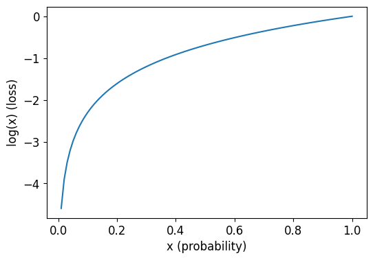
For prediction purposes, assume true label = 1.
When x -> 0 (predicted probability), we want loss function to be high (inf)
And when x -> 1 (predicted probability), we want loss function to be low (close of 0).
Therefore, we take the NEGATIVE log function.
# negative log function
# we take negative log function so that when prob -> 1, loss -> 0; when prob -> 0, loss -> inf
plot_function(lambda x: -1*torch.log(x), min=0,max=1, tx='x (probability)', ty='- log(x) (loss)', title = 'Log Loss when true label = 1')
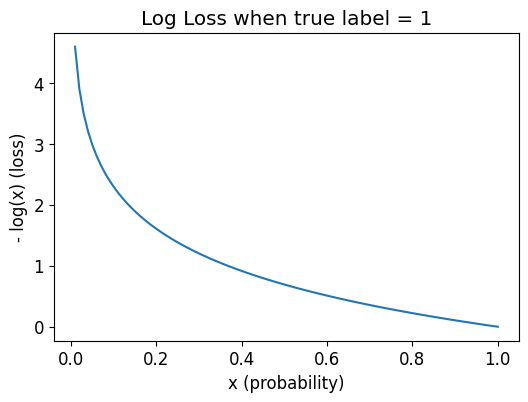
Here is the updated table with the calculated Loss (the log of the predicted label):
from IPython.display import HTML
from IPython.display import display
df = pd.DataFrame(sm_acts, columns=["P(0)","P(1)"])
# df['idx'] = idx
df['Label'] = labels
df['P(Label)'] = sm_acts[range(6), labels]
df['Loss = (Log of P(Label)'] = -torch.log(sm_acts[range(6), labels])
#HTML(df.to_html())
display(df)
| P(0) | P(1) | Label | P(Label) | Loss = (Log of P(Label) | |
|---|---|---|---|---|---|
| 0 | 0.602469 | 0.397531 | 0 | 0.602469 | 0.506720 |
| 1 | 0.502065 | 0.497935 | 1 | 0.497935 | 0.697285 |
| 2 | 0.133188 | 0.866811 | 0 | 0.133188 | 2.015990 |
| 3 | 0.996640 | 0.003360 | 1 | 0.003360 | 5.695763 |
| 4 | 0.595949 | 0.404051 | 1 | 0.404051 | 0.906213 |
| 5 | 0.366118 | 0.633882 | 0 | 0.366118 | 1.004798 |
Loss is high in index 2 and 3 where prediction is confident but inaccurate.
Taking the average of the "Loss" column above is the negative log likelihood loss AKA the cross entropy loss.
# loss column
-torch.log(sm_acts[range(6), labels])
tensor([0.5067, 0.6973, 2.0160, 5.6958, 0.9062, 1.0048])
# mean of Loss column = negative log likelihood loss = cross entropy loss
-torch.log(sm_acts[range(6), labels]).mean()
tensor(1.8045)
Here it is calculated using Cross Entropy Loss function in PyTorch:
# instantiate cross entropy loss as function
loss_func = nn.CrossEntropyLoss()
# calculate cross entropy loss using function
loss_func(acts, targ)
tensor(1.8045)
# can also use:
F.cross_entropy(acts, targ)
tensor(1.8045)
PyTorch loss functions take mean of loss of all items by default. Can use reduction = 'none' to disable default aggregation.
Note that these figures are the same figures in the Loss column.
nn.CrossEntropyLoss(reduction='none')(acts, targ)
tensor([0.5067, 0.6973, 2.0160, 5.6958, 0.9062, 1.0048])
Implementing CrossEntropyLoss() manually:
Start with logits (raw scores from your model).
Apply softmax to turn them into probabilities.
Take negative log of those probabilities.
Select the negative log-prob of the correct class for each example.
Average them.
nn.CrossEntropyLoss() -> Pass in raw logits
F.nll_loss() -> Pass in log(softmax(logits))
acts
tensor([[ 0.6734, 0.2576],
[ 0.4689, 0.4607],
[-2.2457, -0.3727],
[ 4.4164, -1.2760],
[ 0.9233, 0.5347],
[ 1.0698, 1.6187]])
targ
tensor([0, 1, 0, 1, 1, 0])
softmax = F.softmax(acts, dim=1)
softmax
tensor([[0.6025, 0.3975],
[0.5021, 0.4979],
[0.1332, 0.8668],
[0.9966, 0.0034],
[0.5959, 0.4041],
[0.3661, 0.6339]])
log_softmax = torch.log(softmax)
log_softmax
tensor([[-5.0672e-01, -9.2248e-01],
[-6.8903e-01, -6.9729e-01],
[-2.0160e+00, -1.4293e-01],
[-3.3658e-03, -5.6958e+00],
[-5.1760e-01, -9.0621e-01],
[-1.0048e+00, -4.5589e-01]])
log_probs = F.log_softmax(acts, dim=1)
log_probs
tensor([[-5.0672e-01, -9.2248e-01],
[-6.8903e-01, -6.9729e-01],
[-2.0160e+00, -1.4293e-01],
[-3.3658e-03, -5.6958e+00],
[-5.1760e-01, -9.0621e-01],
[-1.0048e+00, -4.5589e-01]])
# log_softmax of true classes
log_softmax[range(6), targ]
tensor([-0.5067, -0.6973, -2.0160, -5.6958, -0.9062, -1.0048])
# take negative of log_softmax of true classes
-log_softmax[range(6), targ]
tensor([0.5067, 0.6973, 2.0160, 5.6958, 0.9062, 1.0048])
# mean loss
-log_softmax[range(6), targ].mean()
tensor(1.8045)
Here are the same results using the PyTorch F.nll_loss function:
acts
tensor([[ 0.6734, 0.2576],
[ 0.4689, 0.4607],
[-2.2457, -0.3727],
[ 4.4164, -1.2760],
[ 0.9233, 0.5347],
[ 1.0698, 1.6187]])
sm_acts
tensor([[0.6025, 0.3975],
[0.5021, 0.4979],
[0.1332, 0.8668],
[0.9966, 0.0034],
[0.5959, 0.4041],
[0.3661, 0.6339]])
F.nll_loss(log_softmax, targ, reduction='none')
tensor([0.5067, 0.6973, 2.0160, 5.6958, 0.9062, 1.0048])
F.nll_loss(log_softmax, targ, reduction='none').mean()
tensor(1.8045)
Full confusion matrix (difficult to read if there are many classes):
interp = ClassificationInterpretation.from_learner(learn)
interp.plot_confusion_matrix(figsize=(12,12), dpi=60)
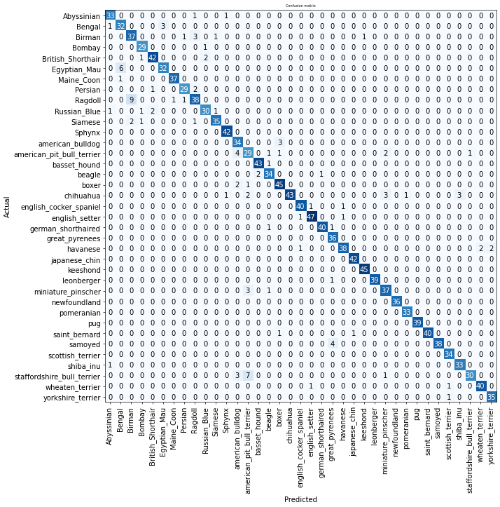
Obtain the top N most confused classes for easier interpretation:
interp.most_confused(min_val=5)
[('Ragdoll', 'Birman', 9),
('staffordshire_bull_terrier', 'american_pit_bull_terrier', 7),
('Egyptian_Mau', 'Bengal', 6)]
Problem: We need to find an optimal learning rate that is not too low and not too high.
If it's too low, training will be too slow and the model will memorize the data.
If the learning rate is too high, the model will overshoot the minimum loss and lead to higher error rate (e.g., lr = 0.1):
learn = vision_learner(dls, resnet34, metrics=error_rate)
learn.fine_tune(1, base_lr=0.1)
Downloading: "https://download.pytorch.org/models/resnet34-b627a593.pth" to /root/.cache/torch/hub/checkpoints/resnet34-b627a593.pth
100%|██████████| 83.3M/83.3M [00:00<00:00, 139MB/s]
| epoch | train_loss | valid_loss | error_rate | time |
|---|---|---|---|---|
| 0 | 2.674522 | 3.832227 | 0.408660 | 00:30 |
| epoch | train_loss | valid_loss | error_rate | time |
|---|---|---|---|---|
| 0 | 3.075671 | 1.445985 | 0.460758 | 00:36 |
Solution: Find the optimal learning rate by starting with a very small LR, gradually increase it, and track the loss in sucessive mini-batches.
We choose a LR at a point between where the loss is clearly decreasing and before the loss starts to increase:
learn = vision_learner(dls, resnet34, metrics=error_rate)
lr_min,lr_steep = learn.lr_find(suggest_funcs=(minimum, steep))
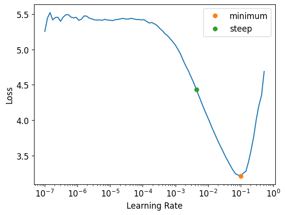
print(f"Minimum/10: {lr_min:.2e}, steepest point: {lr_steep:.2e}")
Minimum/10: 1.00e-02, steepest point: 4.37e-03
In this case, choose a learning rate of 3 x 10^(-3) since the loss is decreasing at this LR:
(Middle point between 1e-3 and 1e-2 is between 3e-3 and 4e-3 because LR finder is plotted on a logarithmic scale).
learn = vision_learner(dls, resnet34, metrics=error_rate)
learn.fine_tune(2, base_lr=3e-3)
Purpose: fine tune the weights of a pre-trained model. Keep all existing weights from previously trained models but only change/train the final output layers. (E.g., we need 37 outputs specifically for 37 breeds of dogs. And we need to train the computer vision model specifically on detecting fur, eye balls, etc.).
The fine_tune function freezes all pre-trained layers and trains the randomly added layers for one epoch. Then it unfreezes all of the layers, and trains them for n number of epochs.
But we will probably want to manually call the underlying methods in fine_tune for more control/customization:
learn.fine_tune??
[0;31mSignature:[0m
[0mlearn[0m[0;34m.[0m[0mfine_tune[0m[0;34m([0m[0;34m[0m
[0;34m[0m [0mepochs[0m[0;34m,[0m[0;34m[0m
[0;34m[0m [0mbase_lr[0m[0;34m=[0m[0;36m0.002[0m[0;34m,[0m[0;34m[0m
[0;34m[0m [0mfreeze_epochs[0m[0;34m=[0m[0;36m1[0m[0;34m,[0m[0;34m[0m
[0;34m[0m [0mlr_mult[0m[0;34m=[0m[0;36m100[0m[0;34m,[0m[0;34m[0m
[0;34m[0m [0mpct_start[0m[0;34m=[0m[0;36m0.3[0m[0;34m,[0m[0;34m[0m
[0;34m[0m [0mdiv[0m[0;34m=[0m[0;36m5.0[0m[0;34m,[0m[0;34m[0m
[0;34m[0m [0;34m*[0m[0;34m,[0m[0;34m[0m
[0;34m[0m [0mlr_max[0m[0;34m=[0m[0;32mNone[0m[0;34m,[0m[0;34m[0m
[0;34m[0m [0mdiv_final[0m[0;34m=[0m[0;36m100000.0[0m[0;34m,[0m[0;34m[0m
[0;34m[0m [0mwd[0m[0;34m=[0m[0;32mNone[0m[0;34m,[0m[0;34m[0m
[0;34m[0m [0mmoms[0m[0;34m=[0m[0;32mNone[0m[0;34m,[0m[0;34m[0m
[0;34m[0m [0mcbs[0m[0;34m=[0m[0;32mNone[0m[0;34m,[0m[0;34m[0m
[0;34m[0m [0mreset_opt[0m[0;34m=[0m[0;32mFalse[0m[0;34m,[0m[0;34m[0m
[0;34m[0m [0mstart_epoch[0m[0;34m=[0m[0;36m0[0m[0;34m,[0m[0;34m[0m
[0;34m[0m[0;34m)[0m[0;34m[0m[0;34m[0m[0m
[0;31mSource:[0m
[0;34m@[0m[0mpatch[0m[0;34m[0m
[0;34m[0m[0;34m@[0m[0mdelegates[0m[0;34m([0m[0mLearner[0m[0;34m.[0m[0mfit_one_cycle[0m[0;34m)[0m[0;34m[0m
[0;34m[0m[0;32mdef[0m [0mfine_tune[0m[0;34m([0m[0mself[0m[0;34m:[0m[0mLearner[0m[0;34m,[0m [0mepochs[0m[0;34m,[0m [0mbase_lr[0m[0;34m=[0m[0;36m2e-3[0m[0;34m,[0m [0mfreeze_epochs[0m[0;34m=[0m[0;36m1[0m[0;34m,[0m [0mlr_mult[0m[0;34m=[0m[0;36m100[0m[0;34m,[0m[0;34m[0m
[0;34m[0m [0mpct_start[0m[0;34m=[0m[0;36m0.3[0m[0;34m,[0m [0mdiv[0m[0;34m=[0m[0;36m5.0[0m[0;34m,[0m [0;34m**[0m[0mkwargs[0m[0;34m)[0m[0;34m:[0m[0;34m[0m
[0;34m[0m [0;34m"Fine tune with `Learner.freeze` for `freeze_epochs`, then with `Learner.unfreeze` for `epochs`, using discriminative LR."[0m[0;34m[0m
[0;34m[0m [0mself[0m[0;34m.[0m[0mfreeze[0m[0;34m([0m[0;34m)[0m[0;34m[0m
[0;34m[0m [0mself[0m[0;34m.[0m[0mfit_one_cycle[0m[0;34m([0m[0mfreeze_epochs[0m[0;34m,[0m [0mslice[0m[0;34m([0m[0mbase_lr[0m[0;34m)[0m[0;34m,[0m [0mpct_start[0m[0;34m=[0m[0;36m0.99[0m[0;34m,[0m [0;34m**[0m[0mkwargs[0m[0;34m)[0m[0;34m[0m
[0;34m[0m [0mbase_lr[0m [0;34m/=[0m [0;36m2[0m[0;34m[0m
[0;34m[0m [0mself[0m[0;34m.[0m[0munfreeze[0m[0;34m([0m[0;34m)[0m[0;34m[0m
[0;34m[0m [0mself[0m[0;34m.[0m[0mfit_one_cycle[0m[0;34m([0m[0mepochs[0m[0;34m,[0m [0mslice[0m[0;34m([0m[0mbase_lr[0m[0;34m/[0m[0mlr_mult[0m[0;34m,[0m [0mbase_lr[0m[0;34m)[0m[0;34m,[0m [0mpct_start[0m[0;34m=[0m[0mpct_start[0m[0;34m,[0m [0mdiv[0m[0;34m=[0m[0mdiv[0m[0;34m,[0m [0;34m**[0m[0mkwargs[0m[0;34m)[0m[0;34m[0m[0;34m[0m[0m
[0;31mFile:[0m /usr/local/lib/python3.11/dist-packages/fastai/callback/schedule.py
[0;31mType:[0m method
fit_one_cycle method is the suggested way to train models without calling fine_tune.
fit_one_cycle starts training at a low learning rate, gradually increases LR for the first section of training, and then gradually decreases LR for last section of training.
Train randomly added layers for three epochs (using previously found learning rate):
learn = vision_learner(dls, resnet34, metrics=error_rate)
learn.fit_one_cycle(3, 3e-3)
| epoch | train_loss | valid_loss | error_rate | time |
|---|---|---|---|---|
| 0 | 1.112472 | 0.364155 | 0.112314 | 00:30 |
| 1 | 0.562948 | 0.262153 | 0.086604 | 00:30 |
| 2 | 0.331478 | 0.228014 | 0.073072 | 00:29 |
Unfreeze the model:
learn.unfreeze()
Now we need to find a new learning rate because we have more layers to train and weights that have been trained for three epochs. This means the previously found learning rates are not appropriate anymore.
We won't have a decrease in loss because the model has been trained already. At some LR, the loss will just increase. Choose an LR well before the increase in loss. (In this case, 1e-5).
learn.lr_find()
SuggestedLRs(valley=5.248074739938602e-05)
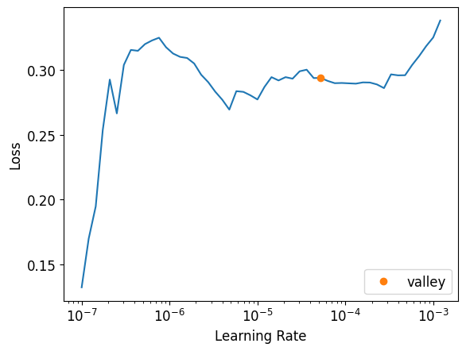
Train for 6 epochs with max learning rate:
learn.fit_one_cycle(6, lr_max=1e-5)
| epoch | train_loss | valid_loss | error_rate | time |
|---|---|---|---|---|
| 0 | 0.245999 | 0.217690 | 0.071042 | 00:36 |
| 1 | 0.246839 | 0.217532 | 0.071042 | 00:37 |
| 2 | 0.227155 | 0.215544 | 0.071719 | 00:37 |
| 3 | 0.196656 | 0.207717 | 0.068336 | 00:37 |
| 4 | 0.188031 | 0.201533 | 0.064953 | 00:37 |
| 5 | 0.180559 | 0.204955 | 0.067659 | 00:37 |
The deepest layers of pre-trained models might need smaller learning rates than the later layers. Therefore, we want to adapt the learning rates to the depth of the layers (smaller LRs for deeper layers, larger LRs of later layers).
lr_max=slice(1e-6, 1e-4) means deepest layer uses LR of 1e-6 and last layer uses LR of 1e-4. Layers inbetween use LRs that sliced equidistant from 1e-6 to 1e-4.
learn = vision_learner(dls, resnet34, metrics=error_rate)
learn.fit_one_cycle(3, 3e-3)
learn.unfreeze()
learn.fit_one_cycle(12, lr_max=slice(1e-6,1e-4))
| epoch | train_loss | valid_loss | error_rate | time |
|---|---|---|---|---|
| 0 | 1.154180 | 0.359302 | 0.110961 | 00:29 |
| 1 | 0.516324 | 0.270517 | 0.087280 | 00:30 |
| 2 | 0.334596 | 0.238323 | 0.069012 | 00:30 |
| epoch | train_loss | valid_loss | error_rate | time |
|---|---|---|---|---|
| 0 | 0.276683 | 0.234703 | 0.069689 | 00:37 |
| 1 | 0.252736 | 0.235514 | 0.070365 | 00:37 |
| 2 | 0.232454 | 0.231764 | 0.070365 | 00:37 |
| 3 | 0.215191 | 0.233608 | 0.075101 | 00:37 |
| 4 | 0.193059 | 0.223943 | 0.064953 | 00:37 |
| 5 | 0.171077 | 0.220571 | 0.072395 | 00:37 |
| 6 | 0.164041 | 0.219061 | 0.069012 | 00:37 |
| 7 | 0.144370 | 0.224508 | 0.071719 | 00:37 |
| 8 | 0.120082 | 0.218150 | 0.066982 | 00:37 |
| 9 | 0.120558 | 0.215837 | 0.066982 | 00:38 |
| 10 | 0.117585 | 0.220407 | 0.069012 | 00:37 |
| 11 | 0.126130 | 0.216361 | 0.067659 | 00:36 |
Plot training and validation loss on graph:
learn.recorder.plot_loss()
<Axes: title={'center': 'learning curve'}, xlabel='steps', ylabel='loss'>
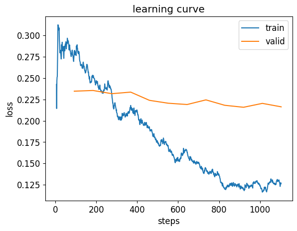
Problem: How many epochs to train for?
Considerations:
In general, deeper architectures (more layers) can model data more accurately. However, training deeper architecures takes more time and computing power.
Pre-trained models (e.g., ResNet) come in different variants (18, 34, 50, 101, 152 layers).
A way to speed up training is to use less-precise numbers (half-precision floating point, also called fp16). This can speed up training by 2-3x. In fastAi, just call .to_fp16() after the Learner.
from fastai.callback.fp16 import *
learn = vision_learner(dls, resnet50, metrics=error_rate).to_fp16()
learn.fine_tune(6, freeze_epochs=3)
Downloading: "https://download.pytorch.org/models/resnet50-11ad3fa6.pth" to /root/.cache/torch/hub/checkpoints/resnet50-11ad3fa6.pth
100%|██████████| 97.8M/97.8M [00:00<00:00, 142MB/s]
| epoch | train_loss | valid_loss | error_rate | time |
|---|---|---|---|---|
| 0 | 2.205635 | 0.471300 | 0.147497 | 00:53 |
| 1 | 0.851554 | 0.274626 | 0.086604 | 00:53 |
| 2 | 0.552624 | 0.287259 | 0.097429 | 00:53 |
| epoch | train_loss | valid_loss | error_rate | time |
|---|---|---|---|---|
| 0 | 0.297660 | 0.235255 | 0.083221 | 01:05 |
| 1 | 0.279863 | 0.231873 | 0.071042 | 01:06 |
| 2 | 0.199640 | 0.221607 | 0.064276 | 01:05 |
| 3 | 0.136157 | 0.218444 | 0.062923 | 01:05 |
| 4 | 0.098143 | 0.199191 | 0.056834 | 01:05 |
| 5 | 0.062279 | 0.197232 | 0.058863 | 01:05 |
Note that we used learn.fine_tune() instead of .fit_one_cycle(). freeze_epochs parameters tells fastai how many epochs to train for while the deeper layers in the model are frozen. This function in general will automatically select the correct learning rate for most data sets.
Note that error rate / accuracy didn't improve much from smaller model, so it is more efficient to start with small models first.
This notebook covered: